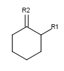
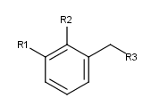
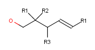
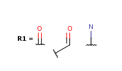
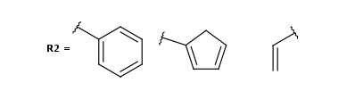

|  |  |  |
|  |  |
The core representation of R-group structures is the RgMolecule class.
The example below shows how to access the root and the R-group definitions in
an R-group structure:
//get the root structure and enumerate the atoms, find R-Atoms.
Molecule root = rgmol.getRoot();
for (int i = root.getAtomCount() - 1; i >= 0; --i){
MolAtom atom = root.getAtom(i);
if (atom.getAtno() == MolAtom.RGROUP){
....
}
}
//enumerate the R-group definitions and its fragments
int nr = rgmol.getRgroupCount();
for(int i = 0; i < nr; ++i) {
int nrm = rgmol.getRgroupMemberCount(i);
for(int j = 0; j < nrm; ++j) {
// .... do something with rgmol.getRgroupMember(i, j)
}
}
|
Previous chapter |
Next chapter |